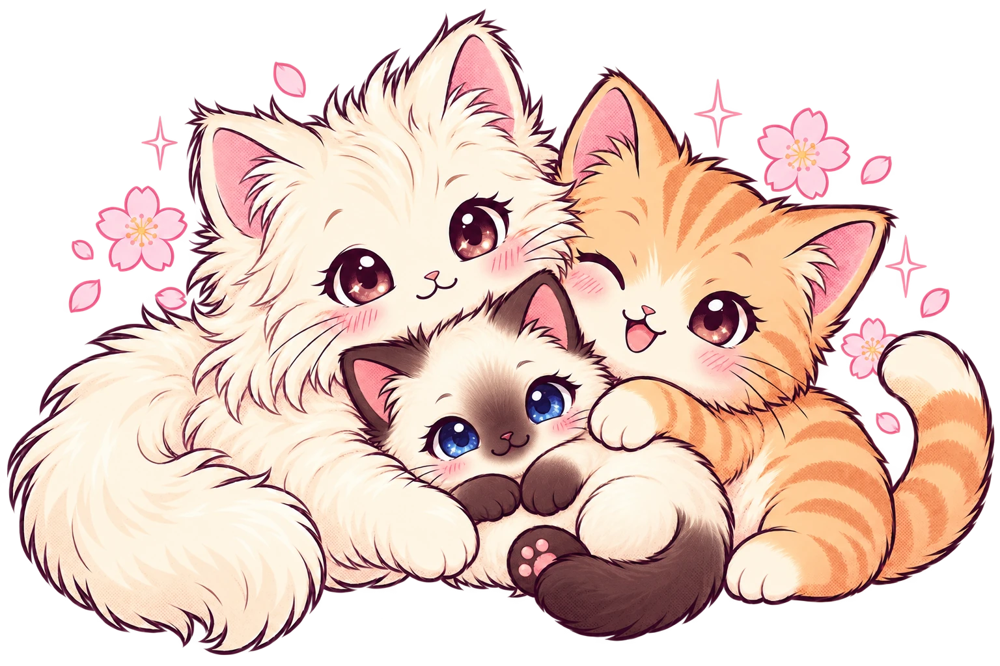

IL TUO PICCOLO ATLANTE FELINO
Un mondo di miao.
Dai morbidi amici di casa ai cugini selvatici.
Conosciamoli, un musetto alla volta.
42 specie45 razzeInfinite fusa

Scegli un musetto
⌕
Tocca una scheda e scopri la sua storia.
Nessun musetto trovato
Prova con un altro nome, oppure esplora tutti i gatti.